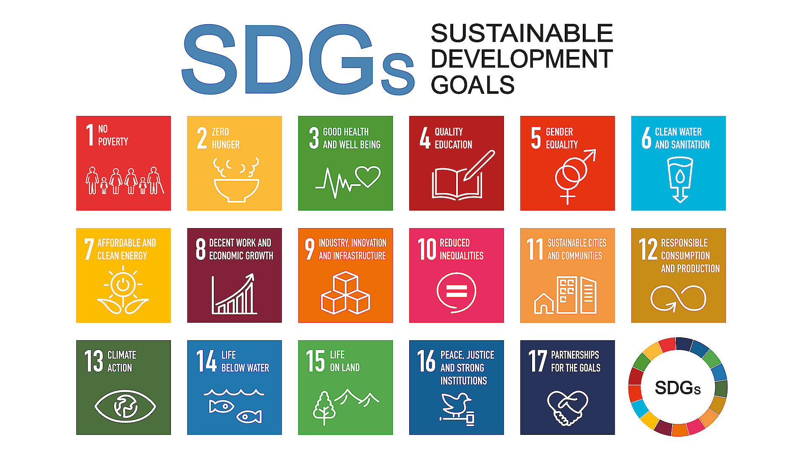
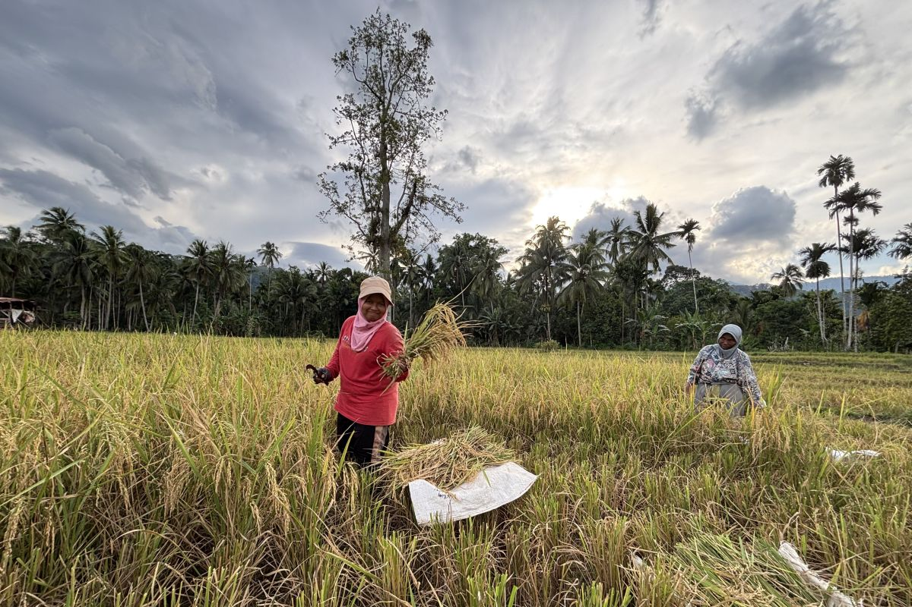

Pengantar 17 Tujuan Pembangunan Berkelanjutan (SDGs)
Sustainable Development Goals (SDGs) adalah agenda pembangunan global PBB yang mengintegrasikan aspek ekonomi, sosial, dan lingkungan secara seimbang untuk menciptakan tatanan dunia yang tangguh dan berkelanjutan bagi semua orang tanpa ada satu pun individu yang tertinggal (Leave No One Behind) hingga target tahun 2030.

Gambar: 17 Sasaran Pembangunan Berkelanjutan PBB
Fokus Utama: SDG 2 - Tanpa Kelaparan
Proyek ini didedikasikan untuk mengeksplorasi secara mendalam pilar-pilar SDG 2: Tanpa Kelaparan, dengan fokus strategis pada upaya pengentasan kelaparan, pencapaian ketahanan pangan nasional, serta optimalisasi status gizi masyarakat melalui praktik pertanian yang berkelanjutan di Indonesia.

Gambar: Ilustrasi Petani: upaya ketahanan pangan dan nutrisi berkelanjutan.
5 Fakta & Angka di Indonesia (APA Style)
21.5%
Prevalensi stunting balita 2023 (Kemenkes RI, 2024).
17.6
Skor Global Hunger Index (Welthungerhilfe, 2023).
74.29
Indeks Ketahanan Pangan (Badan Pangan Nasional, 2024).
7.39%
Kerawanan pangan kronis (BPS, 2023).
14%
Target stunting 2024 (Sekneg RI, 2023).
Analisis SWOT SDG 2
| Aspek | Target 2.1 (Akses Pangan) | Target 2.4 (Produksi Berkelanjutan) |
|---|---|---|
| Strengths | Bantuan pangan luas | Hayati lokal melimpah |
| Weaknesses | Logistik antar pulau | Teknologi masih rendah |
| Opportunities | E-commerce pangan | Inovasi Urban Farming |
| Threats | Inflasi harga global | Krisis perubahan iklim |